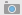

In this document
- Displaying Android Monitor
- Profiling a Running App in Android Monitor
- Switching between Devices and Apps
- Taking a Screen Capture of the Device
- Recording a Video from the Screen
- Examining System Information
- Terminating the App
- Rearranging Android Monitor Windows
- Removing an App from a Device
See also
Dependencies and Prerequisites
- In your app, set the
debuggableproperty totruein the manifest orbuild.gradlefile (it’s initially set by default). - Enable ADB integration through Tools > Android > Enable ADB Integration.
- Make sure your development computer detects your hardware device, which often happens automatically when you connect it to a USB port.
- Enable USB debugging in Developer Options on the device or emulator.
- Android Device Monitor can’t be running.
Android Monitor helps you to profile the performance of your apps so you can optimize, debug, and improve them. It lets you monitor the following aspects of your apps from a hardware device or the Android Studio emulator:
- Log messages, either system- or user-defined
- Memory, CPU, and GPU usage
- Network traffic (hardware device only)
Android Monitor contains the logcat, Memory, CPU, GPU, and Network Monitors that you can use separately to examine these aspects of your apps.
Displaying Android Monitor
Android Monitor is integrated into the Android Studio main window:
- To display Android Monitor, click , which by default is at the bottom of the main window.
- To hide Android Monitor, click again.
Profiling a Running App in Android Monitor
Follow these steps:
- Optionally connect a hardware device.
- Display Android Monitor.
- Open an app project and run the app on a device or emulator.
- Click the tab for the monitor you want to view and start the monitor, if needed:
Switching between Devices and Apps
By default, Android Monitor displays data for your most recently run app. You can switch to another device and app as needed. In addition to currently running apps, you can view information about apps that are no longer running so you can continue to view any information about them that you gathered previously.
At the top of the Android Monitor main window are two menus listing devices and processes. To switch to another device, process, or both, follow these steps:
- Select the device or emulator.
- DISCONNECTED - You closed an emulator or unplugged a device from the computer.
- UNAUTHORIZED - A device needs you to accept the incoming computer connection. For example, if the connected device displays an Allow USB Debugging dialog, click OK to allow the connection.
- OFFLINE - Android Monitor can’t communicate with a device, even though it has detected that device.
- Select the process.
The Device menu lists the devices and emulators that are running or have run during your current session. There are various status messages that can appear in the Device menu:
The Process menu lists the processes that are running or have run during your current session. If a process is no longer running, the menu displays a status of DEAD.
Taking a Screen Capture of the Device
You can take a PNG screenshot of the display on a connected device or the emulator. You can use the images for your marketing materials as well as for debugging, for example.
Follow these steps:
- Run your app from within Android Studio.
- Select the device and the process in the Android Monitor menus, if needed.
- Interact with the display on the device or emulator to stage the image you want.
- Click Screen Capture  in the Android Monitor toolbar.
- Optionally change the image:
- Reload - Click to take a new screenshot.
- Rotate - Click to rotate the image 90 degrees clockwise.
- Frame Screenshot - Select this option and choose a device to add an image of the device to the outside of the screenshot. Select Drop Shadow, Screen Glare, or both to add these effects to your image.
- Chessboard and Grid - Select an option to display these behind your image.
- Zoom In, Zoom Out, or Actual Size - Click these options to get different perspectives of your image without changing the image itself.
- Click Save to save the image.
The screenshot appears in a Screenshot Editor window.
Recording a Video from the Screen
Android Studio lets you record an MP4 video from your hardware device for a maximum of three minutes. You can use the video for your marketing materials as well as for debugging, for example.
Follow these steps:
- Run your app from within Android Studio.
- Select the device and the process in the Android Monitor menus, if needed.
- Interact with the display on the device or emulator to stage the start of the video.
- Click Screen Record in the Android Monitor toolbar.
- In the Screen Recorder Options dialog, optionally change the recording options:
- Bit Rate - Type a bit rate. The default is 4 Mbps.
- Resolution - Type a width and height value in pixels. The value must be a multiple of 16. The default is the resolution of the device.
- Click Start Recording to start the recording.
- Click Stop Recording to stop the recording.
- In the Save As dialog, save the MP4 file.
- In the Screen Recorder dialog, click one of the buttons to show the file location, open the recording in a player, or to dismiss the dialog.
The screenshot appears in a Screenshot Editor window.
Examining System Information
You can view dumpsys output from within Android Monitor. Follow these steps:
- Run your app from within Android Studio.
- Select the device and the process in the Android Monitor menus, if needed.
- Click System Information and then a menu item in the Android Monitor toolbar.
-
Activity Manager State -
dumpsys activity -
Package Information -
dumpsys package -
Memory Usage -
dumpsys meminfo -
Memory Use Over Time -
dumpsys procstats -
Graphics State -
dumpsys gfxinfo
The menu items display different types of dumpsys output:
The information appears in an editable text file in the Code Editor.
Terminating the App
If you want to stop an app you’ve run from Android Studio, follow these steps:
- Select the device and the process in the Android Monitor menus, if needed.
- Click Terminate Application .
The process status changes to DEAD in the Processes menu. The emulator or device continues to run, but the app closes. Any running monitors in Android Monitor stop.
Rearranging Android Monitor Windows
You can rearrange the Android Monitor windows for optimal viewing during your tests:
- To reorder the monitors, move the tabs back and forth.
- To move a monitor to a standalone window, grab a tab and move it to a different location on the screen. Or, select > Floating Mode.
- To dock a standalone window, grab it and move it to the Android Monitor area. Or, select > Floating Mode to deselect it.
- To combine two monitor displays together, grab a tab and move it onto another monitor.
- To hide a monitor, click the icon. To make it reappear, click the icon of the monitor on the far right of the row of tabs.
Removing an App from a Device
To remove an app from a device you use for development, use the normal uninstall procedure on the device.
If you run a new version of an app from Android Studio that’s been already installed on a hardware device, the device displays an Application Installation Failed dialog. Click OK to install the new version of the app.